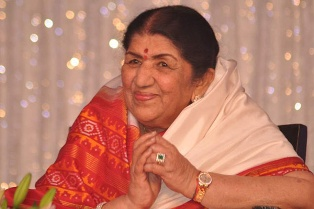

LATHA MANGESHWAR
Latha Mangeshwar Ironically, for someone of her stature, she made her entry into Bollywood at the wrong time - around the 1940s, when bass singers with heavily nasal voices, such as Noor Jehan and Shamshad Begum were in style

A short biography of Latha Mangeshwar
-
Latha mangeshwar was born on 26 August 1929 - 6 Febrauary 2022
-
The most popular playback singer in Bollywood's history. She sung for over 50 years
for actresses from Nargis to Preity Zinta, as well as recorded albums of all kinds (ghazals, pop, etc).
Until s between 948 and 1987. Today that number may have reached 40,000!
-
The 1991 edition, when her entry disappeared,
the Guinness Book of World Records listed her as the most-recorded
-
artist in the world with not less than 30,000 solo, duet,and chorus-backed songs recorded
in 20 Indian language
-
In 1974, latha received the Nobel Peace Prize "for work undertaken in the struggle to overcome poverty and distress, which also constitutes a threat to peace".
-
On 10 September 1946, experienced what she later described as "the call within the call" when she travelled by train to the Loreto convent in Darjeeling from Calcutta
for her annual retreat.
Her singing style was initially reminiscent of Noor Jehan, but she soon overcame that and evolved her own distinctive style. Her sister, Asha Bhosle, too, came up in the late 1950s and the two of them were the queens of Indian playback singing right through to the 1990s. Her voice had a special versatile quality
If You Want More Information click on the below link 👇
WIKIPEDIA